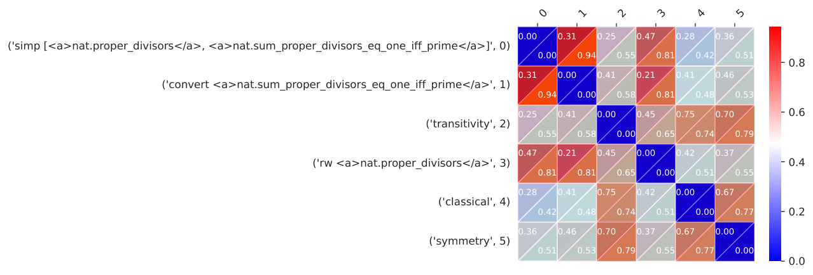

Experiments run in Lean via a modified LeanDojo environment, filtering LLM-generated tactics for proof search on miniF2F and LeanDojo benchmarks.
Abstract
A key challenge in automated formal reasoning is the intractable search space, which grows exponentially with the depth of the proof. This branching is caused by the large number of candidate proof tactics which can be applied to a given goal. Nonetheless, many of these tactics are semantically similar or lead to an execution error, wasting valuable resources in both cases. We address the problem of effectively pruning this search, using only synthetic data generated from previous proof attempts. We first demonstrate that it is possible to generate semantically aware tactic representations which capture the effect on the proving environment, likelihood of success, and execution time. We then propose a novel filtering mechanism which leverages these representations to select semantically diverse and high quality tactics, using Determinantal Point Processes. Our approach, 3D- Prover, is designed to be general, and to augment any underlying tactic generator. We demonstrate the effectiveness of 3D-Prover on the miniF2F and LeanDojo benchmarks by augmenting popular open source proving LLMs. We show that our approach leads to an increase in the overall proof rate, as well as a significant improvement in the tactic success rate, execution time and diversity. We make our code available at https://github.com/sean-lamont/3D-Prover.
Problem
Proof search in automated theorem proving faces an exponentially growing search space. Many candidate tactics are semantically redundant or fail with execution errors, which wastes compute.
Approach
Tactic representations are learned from synthetic transition data collected in earlier proof attempts. A transition model predicts each tactic's error status, execution time and environment output. The resulting embeddings are scaled by quality scores that combine generator logits, predicted success and predicted speed. A k-Determinantal Point Process then selects a diverse, high-quality subset of tactics, and the filter can augment any tactic generator, such as ReProver or InternLM2.5-StepProver, running in Lean through LeanDojo.
Results
3D-Prover improves the proof rate over Top-K and random filtering on miniF2F, with gains up to +8.9% on miniF2F-test and +15.2% on miniF2F-valid with ReProver at K=8. With InternLM2.5-StepProver it raises Pass@6 from 49.0% to 53.1%. It also improves tactic success rate, execution time and diversity.

Figure 4 : Cosine similarity between tactic embeddings resulting in unique subgoals, for a sample root node in miniF2F-valid. The top value gives the similarity for embeddings from 3D-Prover, while the bottom gives the similarity for embeddings from an Autoencoder. We see that 3D-Prover better separates these semantically distinct tactics, in comparison to the Autoencoder, which only separates bas
K
Top-K
Random
3D-Prover
Gain
8
22.4
19.0
24.4
+8.9%
16
26.5
25.4
27.3
+3.0%
32
27.8
27.4
28.2
+1.4%
ReProver proof rate (%) on miniF2F-test (mean over four runs) by filter size K